Run the bulk RNAseq processing pipeline on the data found at: ncats_sctlraw\NovaSeq_raw\230224_A00898_0027_AHKVKFDRXY
Requested analysis: 1. Generate a DE test comparing the time points below with only the two normal lines (combined GM25256 & NCRM5).
Day0 vs day 14
Day0 vs day 21
Day0 vs day 35
Day0 vs day 60
Filtering out p < 0.05 and FC > 2, share with Seungmi the DE test in an MS Excel file (in the excel file, please also provide the FC for each replicate so Seungmi could also plot the data).
Generate a heatmap with the top 15 gene across each time point.
x axis: day 0 14 21 35 60 y axis: Top 15 genes x 5 time points
DE tests should be run on the combined normal cell lines, and on each normal cell line separate from the other.
Preperation
library(DESeq2)
Loading required package: S4Vectors
Loading required package: stats4
Loading required package: BiocGenerics
Attaching package: 'BiocGenerics'
The following objects are masked from 'package:stats':
IQR, mad, sd, var, xtabs
Welcome to Bioconductor
Vignettes contain introductory material; view with
'browseVignettes()'. To cite Bioconductor, see
'citation("Biobase")', and for packages 'citation("pkgname")'.
Attaching package: 'Biobase'
The following object is masked from 'package:MatrixGenerics':
rowMedians
The following objects are masked from 'package:matrixStats':
anyMissing, rowMedians
library(data.table)
Attaching package: 'data.table'
The following object is masked from 'package:SummarizedExperiment':
shift
The following object is masked from 'package:GenomicRanges':
shift
The following object is masked from 'package:IRanges':
shift
The following objects are masked from 'package:S4Vectors':
first, second
library(RColorBrewer)library(RUVSeq)
Loading required package: EDASeq
Loading required package: ShortRead
Loading required package: BiocParallel
Loading required package: Biostrings
Loading required package: XVector
Attaching package: 'Biostrings'
The following object is masked from 'package:base':
strsplit
Loading required package: Rsamtools
Loading required package: GenomicAlignments
Attaching package: 'GenomicAlignments'
The following object is masked from 'package:data.table':
last
Attaching package: 'ShortRead'
The following object is masked from 'package:data.table':
tables
Loading required package: edgeR
Loading required package: limma
Attaching package: 'limma'
The following object is masked from 'package:DESeq2':
plotMA
The following object is masked from 'package:BiocGenerics':
plotMA
Warning in validityMethod(object): 'counts' contains non-integer numbers
# Create new set normalized by RuvSeqspikes <- spikes[spikes %in%row.names(dds)]set2 <-RUVg(set, spikes, k=1)
normalization comparison plots
Whoa! This clearly shows RUVSeq isn’t as good as the default normalization!! Will continue without using the RUVseq normalized data.
# First the RLE (Relative levels of expression)par(mfrow=c(1,3))plotRLE( set, outline=FALSE, ylim =c(-4,4), col=colors[x] )plotRLE( set_norm, outline=FALSE, ylim =c(-4,4), col=colors[x] )plotRLE( set2, outline=FALSE, ylim =c(-4,4), col=colors[x] )
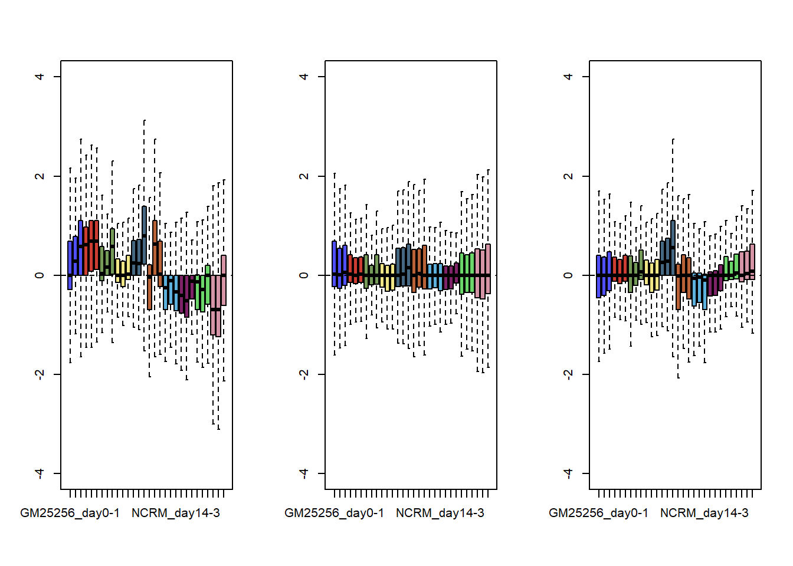
# Now the PCAplotPCA( set, col=colors[x], cex=1.2 )plotPCA( set_norm, col=colors[x], cex=1.2 )plotPCA( set2, col=colors[x], cex=1.2 )
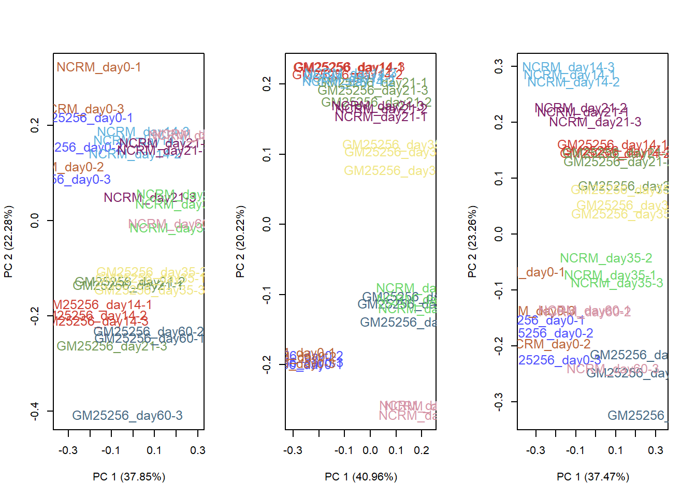
Create DE results
Be sure to filter on adj_pvalue < 0.05 and lfc > 2.0 Capture top 15 genes in .csv and heatmap For this part (combined), also add the normalized count values for each replicate.
NOTE: The commented out lines of code in the following block were used to examine the difference between results with and without lfc shrinkage estimation. From my initial observation, we should move forward with the shrinkage estimation in place. I leave the other code here to make it easier to recreate that data, if desired at a later time.
# Set up file paths:output_dir <-file.path(getwd(),"output/combined_normal")#convenience variablescond1 <-"day0"cond2s <-c("day14","day21","day35","day60")goi_list =c()normalizedCounts <-as.matrix(counts(dds, normalized =TRUE)) for ( cond2 in cond2s ) {# Run lfcShrink and show before and after plots. Use apeglm for lfcShrink# method. Create lists based on post-shrinkage results.#res <- results( dds, contrast=c("timepoint", cond2, cond1 ))#res <- res[! res@rownames %in% filterlist$V1,]#res <- res[order(-res$log2FoldChange),] resLFC <-lfcShrink(dds,coef =paste0( "timepoint_", cond2, "_vs_", cond1 ),type ="apeglm") resLFC <- resLFC[! resLFC@rownames %in% filterlist$V1,]# Seungmi asked to remove "ENSG.*" genes resLFC <- resLFC[!grepl( "ENSG", resLFC@rownames), ] resLFC <- resLFC[order(-resLFC$log2FoldChange),]# Compare volcano plots for before and after apeglm#par(mfrow=c(1,2))#DESeq2::plotMA(res, ylim=c(-5,5)) DESeq2::plotMA(resLFC, ylim=c(-5,5))# save DE files at this point df.resLFC <-as.data.frame(resLFC)# Filter on adj pval df.resLFC <- df.resLFC[ df.resLFC$padj <0.05, ]# Filter on logFold Change df.resLFC <-filter( df.resLFC, abs(log2FoldChange) >2)# Add columns for normalized counts toMerge <- normalizedCounts[ , grepl( cond1, colnames( normalizedCounts) ) ] toMerge <-cbind( toMerge, normalizedCounts[ , grepl( cond2, colnames( normalizedCounts) ) ]) toMerge <- toMerge[ rownames(toMerge) %in%rownames(df.resLFC), ]# fix rownames df.resLFC <-merge( df.resLFC, toMerge, by ='row.names' )rownames( df.resLFC ) <- df.resLFC$Row.names df.resLFC <- df.resLFC[ , -1 ] df.resLFC <- df.resLFC[order(-df.resLFC$log2FoldChange),] filebase <-paste0( cond2, "_vs_", cond1 ) filename <-paste0( filebase, "_all.csv" )fwrite( df.resLFC, file.path( output_dir, filename ),col.names = T,row.names = T,sep =',' )# grab top 15 at this point, too. top15 <-head( df.resLFC, n =15 ) filename <-paste0( filebase, "_top15.csv" )fwrite( top15,file.path( output_dir, filename),col.names = T,row.names = T,sep =',' )# Continue to grow goi_list goi_list <-c( goi_list, rownames(top15) )}
using 'apeglm' for LFC shrinkage. If used in published research, please cite:
Zhu, A., Ibrahim, J.G., Love, M.I. (2018) Heavy-tailed prior distributions for
sequence count data: removing the noise and preserving large differences.
Bioinformatics. https://doi.org/10.1093/bioinformatics/bty895
using 'apeglm' for LFC shrinkage. If used in published research, please cite:
Zhu, A., Ibrahim, J.G., Love, M.I. (2018) Heavy-tailed prior distributions for
sequence count data: removing the noise and preserving large differences.
Bioinformatics. https://doi.org/10.1093/bioinformatics/bty895
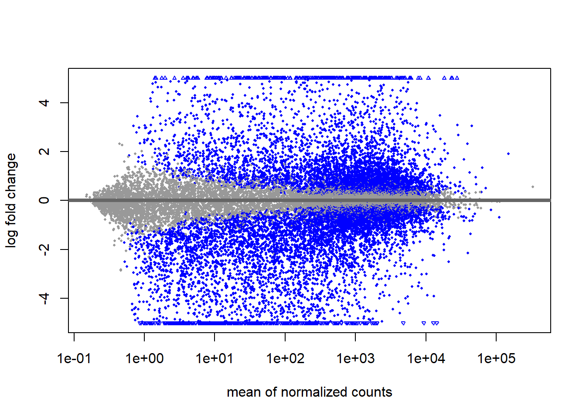
using 'apeglm' for LFC shrinkage. If used in published research, please cite:
Zhu, A., Ibrahim, J.G., Love, M.I. (2018) Heavy-tailed prior distributions for
sequence count data: removing the noise and preserving large differences.
Bioinformatics. https://doi.org/10.1093/bioinformatics/bty895
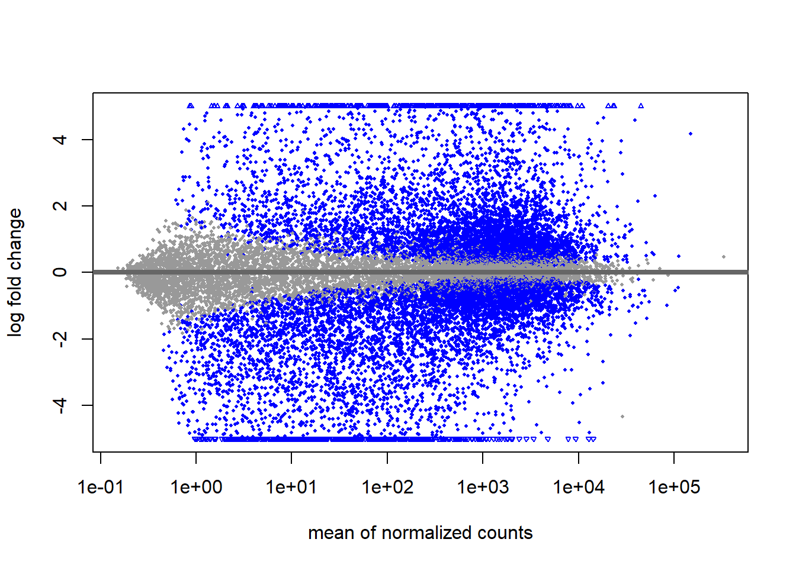
using 'apeglm' for LFC shrinkage. If used in published research, please cite:
Zhu, A., Ibrahim, J.G., Love, M.I. (2018) Heavy-tailed prior distributions for
sequence count data: removing the noise and preserving large differences.
Bioinformatics. https://doi.org/10.1093/bioinformatics/bty895
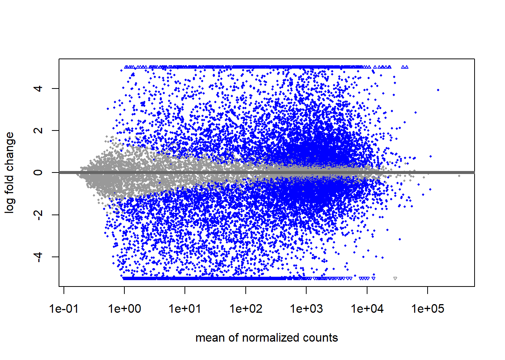
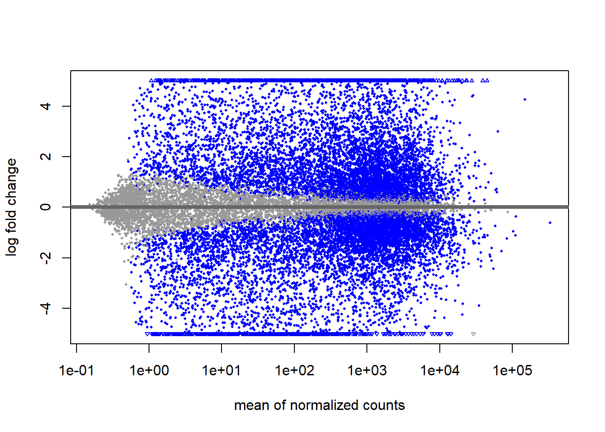
Create heatmap
# Setup to save NOTE: havin trouble getting this to work from within a .qmd#heatmap_pdf_filename <- "top15_vs_Day0_heatmap.pdf"#pdf( file.path( output_dir, heatmap_pdf_filename ) )heatmapValues <- normalizedCounts[goi_list,]heatmapData <-t(apply(heatmapValues,1,cal_z_score))row.names( heatmapData ) <-make.unique( as.character( row.names( heatmapData )))row_annotations <-as.data.frame(heatmapData)row_annotations$timepoint =c(rep("Day14", 15),rep("Day21", 15),rep("Day35", 15),rep("Day60", 15) )row_annotations <-select(row_annotations, timepoint)pheatmap( heatmapData, cluster_rows=FALSE, cluster_cols=FALSE,gaps_row =c(15,30,45),annotation_row = row_annotations,main ="Top 15 genes vs Day0")
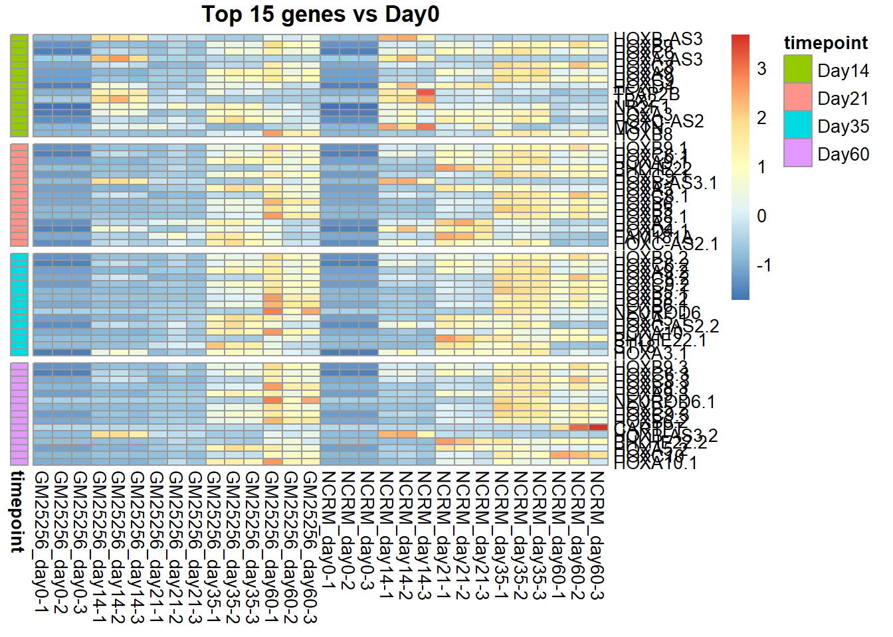
#dev.off() # For use after saving plot to pdf.
Part 2: GM25256, only
##Loading Data
htseq_files_dir <-file.path(getwd(),'data/htseq_count')sampleFiles <-grep( "htseq_count", list.files(htseq_files_dir), value=TRUE)# Keep only GM25256 for Part 2:sampleFiles <-grep("GM25256", sampleFiles, value =TRUE, invert =FALSE )
Create metadata
sampleName is: cellType + timepoint + replicateNumber
Be sure to filter on adj_pvalue < 0.05 and lfc > 2.0 Capture top 15 genes in .csv and heatmap
# Set up file paths:output_dir <-file.path(getwd(),"output/GM25256")#convenience variablescond1 <-"day0"cond2s <-c("day14","day21","day35","day60")goi_list =c()normalizedCounts <-as.matrix(counts(dds, normalized =TRUE)) for ( cond2 in cond2s ) {# Run lfcShrink and show before and after plots. Use apeglm for lfcShrink# method. Create lists based on post-shrinkage results.#res <- results( dds, contrast=c("timepoint", cond2, cond1 ))#res <- res[! res@rownames %in% filterlist$V1,]#res <- res[order(-res$log2FoldChange),] resLFC <-lfcShrink(dds,coef =paste0( "timepoint_", cond2, "_vs_", cond1 ),type ="apeglm") resLFC <- resLFC[! resLFC@rownames %in% filterlist$V1,]# Seungmi asked to remove "ENSG.*" genes resLFC <- resLFC[!grepl( "ENSG", resLFC@rownames), ] resLFC <- resLFC[order(-resLFC$log2FoldChange),]# Compare volcano plots for before and after apeglm#par(mfrow=c(1,2))#DESeq2::plotMA(res, ylim=c(-5,5)) DESeq2::plotMA(resLFC, ylim=c(-5,5))# save DE files at this point df.resLFC <-as.data.frame(resLFC)# Filter on adj pval df.resLFC <- df.resLFC[ df.resLFC$padj <0.05, ]# Filter on logFold Change df.resLFC <-filter( df.resLFC, abs(log2FoldChange) >2)# Add columns for normalized counts toMerge <- normalizedCounts[ , grepl( cond1, colnames( normalizedCounts) ) ] toMerge <-cbind( toMerge, normalizedCounts[ , grepl( cond2, colnames( normalizedCounts) ) ]) toMerge <- toMerge[ rownames(toMerge) %in%rownames(df.resLFC), ]# fix rownames df.resLFC <-merge( df.resLFC, toMerge, by ='row.names' )rownames( df.resLFC ) <- df.resLFC$Row.names df.resLFC <- df.resLFC[ , -1 ] df.resLFC <- df.resLFC[order(-df.resLFC$log2FoldChange),] filebase <-paste0( cond2, "_vs_", cond1 ) filename <-paste0( filebase, "_all.csv" )fwrite( df.resLFC, file.path( output_dir, filename ),col.names = T,row.names = T,sep =',' )# grab top 15 at this point, too. top15 <-head( df.resLFC, n =15 ) filename <-paste0( filebase, "_top15.csv" )fwrite( top15,file.path( output_dir, filename),col.names = T,row.names = T,sep =',' )# Continue to grow goi_list goi_list <-c( goi_list, rownames(top15) )}
using 'apeglm' for LFC shrinkage. If used in published research, please cite:
Zhu, A., Ibrahim, J.G., Love, M.I. (2018) Heavy-tailed prior distributions for
sequence count data: removing the noise and preserving large differences.
Bioinformatics. https://doi.org/10.1093/bioinformatics/bty895
using 'apeglm' for LFC shrinkage. If used in published research, please cite:
Zhu, A., Ibrahim, J.G., Love, M.I. (2018) Heavy-tailed prior distributions for
sequence count data: removing the noise and preserving large differences.
Bioinformatics. https://doi.org/10.1093/bioinformatics/bty895
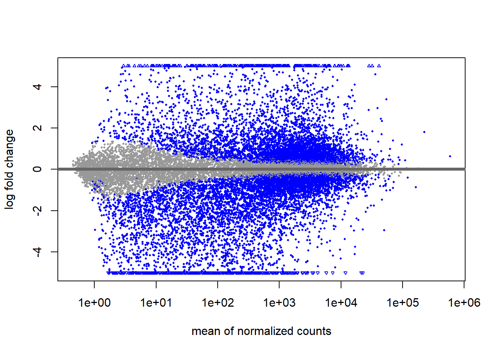
using 'apeglm' for LFC shrinkage. If used in published research, please cite:
Zhu, A., Ibrahim, J.G., Love, M.I. (2018) Heavy-tailed prior distributions for
sequence count data: removing the noise and preserving large differences.
Bioinformatics. https://doi.org/10.1093/bioinformatics/bty895
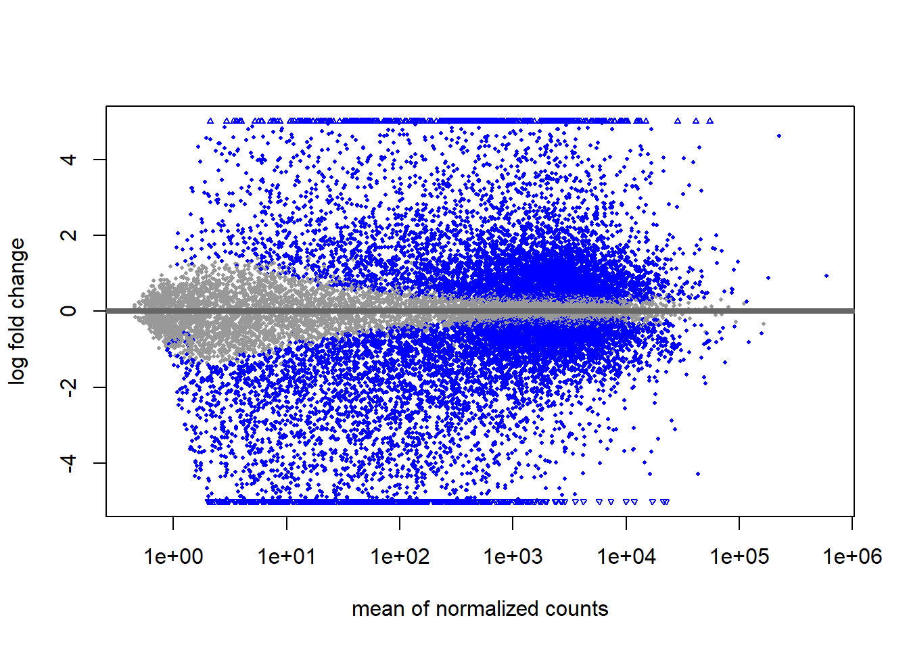
using 'apeglm' for LFC shrinkage. If used in published research, please cite:
Zhu, A., Ibrahim, J.G., Love, M.I. (2018) Heavy-tailed prior distributions for
sequence count data: removing the noise and preserving large differences.
Bioinformatics. https://doi.org/10.1093/bioinformatics/bty895
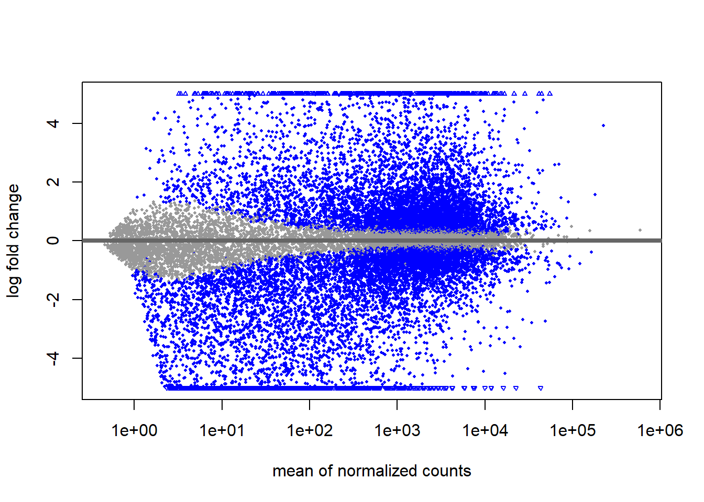
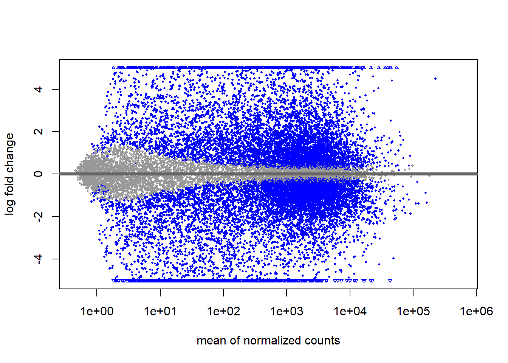
Create heatmap
# Setup to save NOTE: havin trouble getting this to work from within a .qmd#heatmap_pdf_filename <- "top15_vs_Day0_heatmap.pdf"#pdf( file.path( output_dir, heatmap_pdf_filename ), width = 8, height = 10.5 )normalizedCounts <-as.matrix(counts(dds, normalized =TRUE))heatmapValues <- normalizedCounts[goi_list,]heatmapData <-t(apply(heatmapValues,1,cal_z_score))row.names( heatmapData ) <-make.unique( as.character( row.names( heatmapData )))row_annotations <-as.data.frame(heatmapData)row_annotations$timepoint =c(rep("Day14", 15),rep("Day21", 15),rep("Day35", 15),rep("Day60", 15) )row_annotations <-select(row_annotations, timepoint)pheatmap( heatmapData, cluster_rows=FALSE, cluster_cols=FALSE,gaps_row =c(15,30,45),annotation_row = row_annotations,main ="Top 15 genes vs Day0")
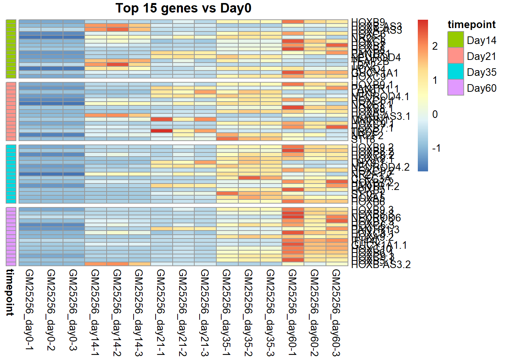
#dev.off() # For use after saving plot to pdf.
Part 3: NCRM5, only
##Loading Data
htseq_files_dir <-file.path(getwd(),'data/htseq_count')sampleFiles <-grep( "htseq_count", list.files(htseq_files_dir), value=TRUE)# Keep only NCRM5 for Part 2:sampleFiles <-grep("NCRM", sampleFiles, value =TRUE, invert =FALSE )
Create metadata
sampleName is: cellType + timepoint + replicateNumber
Be sure to filter on adj_pvalue < 0.05 and lfc > 2.0 Capture top 15 genes in .csv and heatmap
# Set up file paths:output_dir <-file.path(getwd(),"output/NCRM5")#convenience variablescond1 <-"day0"cond2s <-c("day14","day21","day35","day60")goi_list =c()normalizedCounts <-as.matrix(counts(dds, normalized =TRUE)) for ( cond2 in cond2s ) {# Run lfcShrink and show before and after plots. Use apeglm for lfcShrink# method. Create lists based on post-shrinkage results.#res <- results( dds, contrast=c("timepoint", cond2, cond1 ))#res <- res[! res@rownames %in% filterlist$V1,]#res <- res[order(-res$log2FoldChange),] resLFC <-lfcShrink(dds,coef =paste0( "timepoint_", cond2, "_vs_", cond1 ),type ="apeglm") resLFC <- resLFC[! resLFC@rownames %in% filterlist$V1,]# Seungmi asked to remove "ENSG.*" genes resLFC <- resLFC[!grepl( "ENSG", resLFC@rownames), ] resLFC <- resLFC[order(-resLFC$log2FoldChange),]# Compare volcano plots for before and after apeglm#par(mfrow=c(1,2))#DESeq2::plotMA(res, ylim=c(-5,5)) DESeq2::plotMA(resLFC, ylim=c(-5,5))# save DE files at this point df.resLFC <-as.data.frame(resLFC)# Filter on adj pval df.resLFC <- df.resLFC[ df.resLFC$padj <0.05, ]# Filter on logFold Change df.resLFC <-filter( df.resLFC, abs(log2FoldChange) >2)# Add columns for normalized counts toMerge <- normalizedCounts[ , grepl( cond1, colnames( normalizedCounts) ) ] toMerge <-cbind( toMerge, normalizedCounts[ , grepl( cond2, colnames( normalizedCounts) ) ]) toMerge <- toMerge[ rownames(toMerge) %in%rownames(df.resLFC), ]# fix rownames df.resLFC <-merge( df.resLFC, toMerge, by ='row.names' )rownames( df.resLFC ) <- df.resLFC$Row.names df.resLFC <- df.resLFC[ , -1 ] df.resLFC <- df.resLFC[order(-df.resLFC$log2FoldChange),] filebase <-paste0( cond2, "_vs_", cond1 ) filename <-paste0( filebase, "_all.csv" )fwrite( df.resLFC, file.path( output_dir, filename ),col.names = T,row.names = T,sep =',' )# grab top 15 at this point, too. top15 <-head( df.resLFC, n =15 ) filename <-paste0( filebase, "_top15.csv" )fwrite( top15,file.path( output_dir, filename),col.names = T,row.names = T,sep =',' )# Continue to grow goi_list goi_list <-c( goi_list, rownames(top15) )}
using 'apeglm' for LFC shrinkage. If used in published research, please cite:
Zhu, A., Ibrahim, J.G., Love, M.I. (2018) Heavy-tailed prior distributions for
sequence count data: removing the noise and preserving large differences.
Bioinformatics. https://doi.org/10.1093/bioinformatics/bty895
using 'apeglm' for LFC shrinkage. If used in published research, please cite:
Zhu, A., Ibrahim, J.G., Love, M.I. (2018) Heavy-tailed prior distributions for
sequence count data: removing the noise and preserving large differences.
Bioinformatics. https://doi.org/10.1093/bioinformatics/bty895
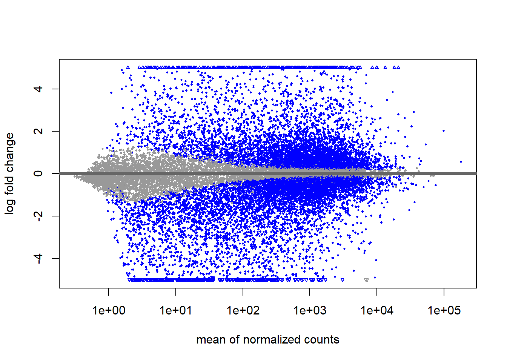
using 'apeglm' for LFC shrinkage. If used in published research, please cite:
Zhu, A., Ibrahim, J.G., Love, M.I. (2018) Heavy-tailed prior distributions for
sequence count data: removing the noise and preserving large differences.
Bioinformatics. https://doi.org/10.1093/bioinformatics/bty895
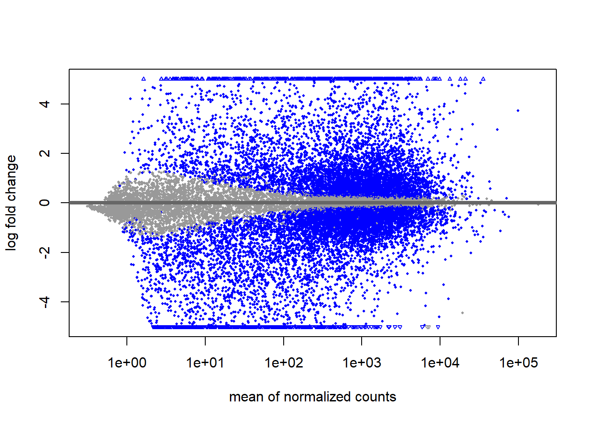
using 'apeglm' for LFC shrinkage. If used in published research, please cite:
Zhu, A., Ibrahim, J.G., Love, M.I. (2018) Heavy-tailed prior distributions for
sequence count data: removing the noise and preserving large differences.
Bioinformatics. https://doi.org/10.1093/bioinformatics/bty895
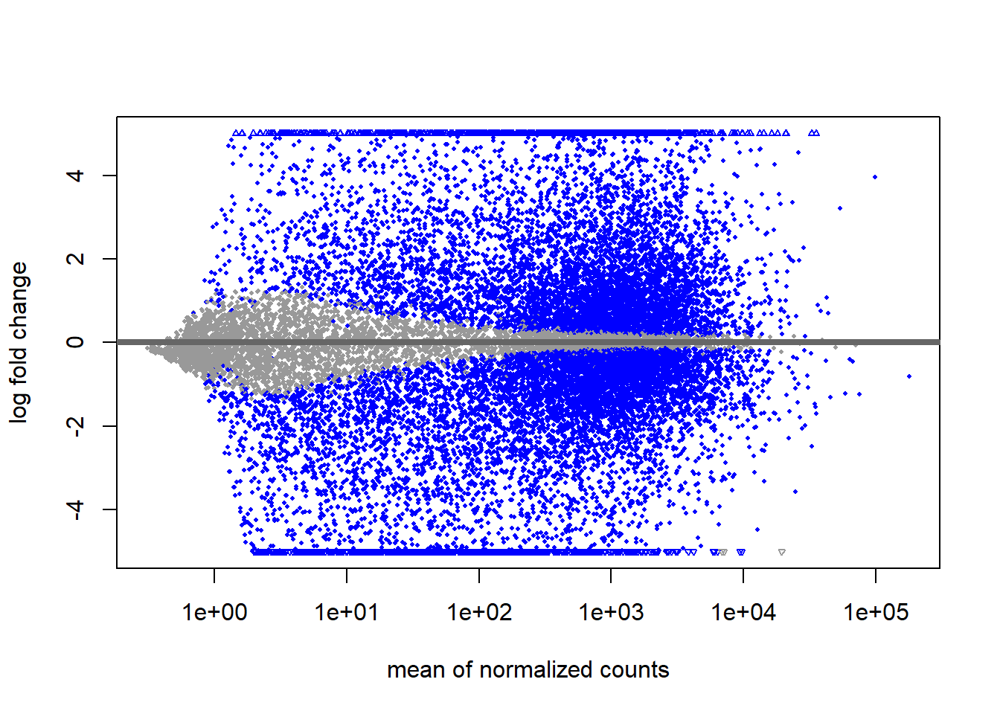
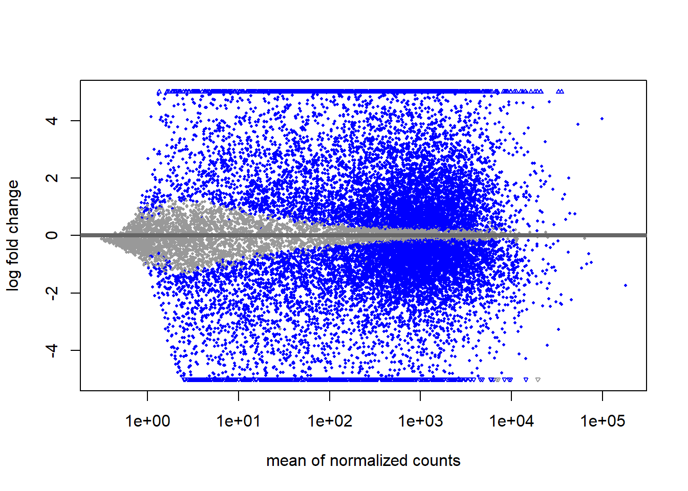
Create heatmap
# Setup to save NOTE: havin trouble getting this to work from within a .qmd#heatmap_pdf_filename <- "top15_vs_Day0_heatmap.pdf"#pdf( file.path( output_dir, heatmap_pdf_filename ), width = 8, height = 10.5 )normalizedCounts <-as.matrix(counts(dds, normalized =TRUE))heatmapValues <- normalizedCounts[goi_list,]heatmapData <-t(apply(heatmapValues,1,cal_z_score))row.names( heatmapData ) <-make.unique( as.character( row.names( heatmapData )))row_annotations <-as.data.frame(heatmapData)row_annotations$timepoint =c(rep("Day14", 15),rep("Day21", 15),rep("Day35", 15),rep("Day60", 15) )row_annotations <-select(row_annotations, timepoint)pheatmap( heatmapData, cluster_rows=FALSE, cluster_cols=FALSE,gaps_row =c(15,30,45),annotation_row = row_annotations,main ="Top 15 genes vs Day0")